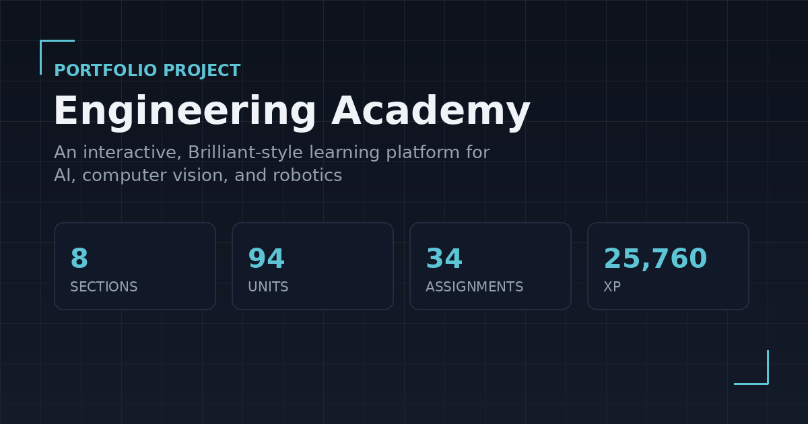

Applied AI & Robotics R&D
Mechatronics PhD student building intelligent systems that solve real-world engineering problems — combining AI, computer vision, robotics, and trustworthy machine learning.
My professional center is Applied AI & Robotics R&D, aimed at intelligent physical systems — where AI, sensing, and robotics meet the real world.
Pillar
AI / Machine Learning / Deep Learning
Pillar
Computer Vision
Pillar
Robotics & Physical Systems
Pillar
Mathematics & ML Foundations
A working example of how I like to build: documented, modular, and finished end to end.

An interactive, Brilliant-style learning platform covering my own AI, computer vision, and robotics curriculum — built as a portfolio project that doubles as my actual study tool.
Engineering work from my thesis and graduation projects — sensor fusion, classical computer vision, and deep learning.
B.Sc. graduation project: sorts household waste into metal, glass, paper, and plastic using a sensor-fusion method (camera + ultrasonic + load cell) instead of an expensive material sensor. Manufacturing-ready design — full SolidWorks CAD, dimensioned technical drawings, tested hardware, Arduino + Raspberry Pi code.
View on GitHub →A classical computer-vision pipeline that detects and counts white blood cells, red blood cells, and platelets in microscope images — HSV color segmentation, morphology, and watershed segmentation, no deep learning.
View on GitHub →M.Sc. thesis: deep learning classification of Wireless Capsule Endoscopy images, reaching 95.75% accuracy on EfficientNet through data augmentation, ensembling, and hyperparameter tuning. Published at the AVRASYA 10th International Conference on Applied Sciences.
View on GitHub →An entropy-regularization approach to Squeeze-and-Excitation channel attention for CNNs, implemented and evaluated in a single reproducible notebook.
View on GitHub →Competence measured through evidence, not certificates — projects, research, and things that shipped.
Sep 2025 – Present
Research focus: machine learning & deep learning foundations, computer vision — theoretical grounding plus applied methods for visual data.
Oct 2021 – Jul 2024
Thesis: optimizing deep learning model performance for wireless capsule endoscopy image classification. Reached 95.75% classification accuracy via ensemble methods and hyperparameter tuning; published research on data augmentation for capsule-image classification with EfficientNet.
Sep 2016 – Aug 2020
Graduation project: a smart waste-sorting bin combining Arduino/Raspberry Pi sensing with OpenCV-based image processing and SolidWorks-designed mechanics. GPA 3.17/4.00, top 10 in department.